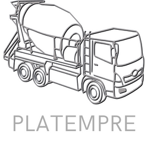

<div class="intro">
  <div class="data">
    <div class="title">
      <h1>Descripción de PLATEMPRE</h1>
    </div>
    <div class="subphrase">
      <p>Comienza a mejorar la eficiencia en tu obra.</p>
    </div>
    <div class="description">
      <p>
        Plataforma digital para gestionar, integrar y comparar las cantidades
        teóricas y las reales con respecto al manejo del concreto en obra,
        generando un informe a partir de datos que provee la persona encargada,
        permitiendo de esta manera visualizar de manera puntual el desperdicio
        ocasionado.
      </p>
    </div>
    <div class="logo">
      <div class="img">
        
      </div>
    </div>
  </div>
</div>
